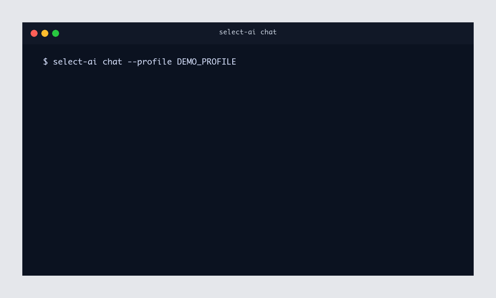

1. Command line interface¶
The select-ai command line interface (CLI) provides a terminal workflow for
using Select AI profiles without writing Python code. It is intended for quick
exploration, profile validation, prompt testing, SQL generation,
summarization, translation, and interactive chat against an existing profile.
The CLI is useful for developers who want a fast shell workflow and for non-developers who are comfortable running terminal commands but do not want to write Python code. It can help users check whether a profile is configured correctly, inspect generated SQL, try prompts during development, or interact with a curated profile through a simple command.
The CLI works with Select AI profiles. RAG is supported when the selected profile is already configured with a vector index. Additional CLI options and workflows will be added in upcoming releases as the CLI evolves.
{kind=link}

The package provides an optional select-ai command line tool. Install the
CLI extra to use it:
pip install 'select_ai[cli]'
Use select-ai --help to view the available command groups and
select-ai <command> --help to view options for a specific command.
Set the database connection details as environment variables, or pass them as command line options:
export SELECT_AI_USER=<db_user>
export SELECT_AI_PASSWORD=<db_password>
export SELECT_AI_DB_CONNECT_STRING=<db_connect_string>
1.1. Connection options¶
All CLI commands accept the same database connection options:
Option |
Environment variable |
|---|---|
|
|
|
|
|
|
|
|
|
|
If --password and SELECT_AI_PASSWORD are not set, the CLI prompts for
the database password. Wallet options are optional and are only needed for
wallet-based database connections.
1.2. Interactive chat¶
The chat subcommand starts an interactive profile chat
Read-Eval-Print Loop (REPL). A REPL is a terminal session that reads each
prompt you type, evaluates it, prints the response, and then waits for the next
prompt. Pass an existing Select AI profile with --profile:
select-ai chat --profile OCI_AI_PROFILE
The REPL uses Profile.chat_session() so prompts in the same terminal session
share conversation context. Responses stream by default. Use --no-stream to
print each response after it is fully generated.
Connected to Select AI profile: OCI_AI_PROFILE
Type /help for commands. Type /exit to quit.
select_ai> What tables can I ask about?
...
select_ai> /exit
Useful options:
--user,--password, and--dsnoverride the environment values.--wallet-locationand--wallet-passwordconfigure wallet connections.--chunk-sizecontrols the number of CLOB characters read per stream chunk.--conversation-lengthcontrols how many prompts are retained in context.--keep-conversationkeeps the database conversation after the REPL exits.
Inside the REPL, use these commands:
Command |
Description |
|---|---|
|
Show available REPL commands. |
|
Start a fresh database conversation. |
|
Exit the chat session. |
|
Exit the chat session. |
1.3. SQL commands¶
SQL operations are one-shot subcommands instead of a REPL:
select-ai sql show --profile OCI_AI_PROFILE "count movies by genre"
select-ai sql run --profile OCI_AI_PROFILE "count movies by genre"
select-ai sql explain --profile OCI_AI_PROFILE "count movies by genre"
select-ai sql narrate --profile OCI_AI_PROFILE "count movies by genre"
show, explain, and narrate stream text output by default. Use
--no-stream to print the response after it is fully generated, and
--chunk-size to control the number of CLOB characters read per stream
chunk.
run executes the generated SQL and prints the returned result table. It
does not support streaming.
1.4. Profile commands¶
Summarize and translate are available under the profile command group:
select-ai profile list
select-ai profile list --pattern "OCI.*"
select-ai profile summarize --profile OCI_AI_PROFILE "Text to summarize"
select-ai profile summarize --profile OCI_AI_PROFILE --file notes.txt
select-ai profile summarize \
--profile OCI_AI_PROFILE \
--location-uri https://example.com/article.txt
select-ai profile summarize \
--profile OCI_AI_PROFILE \
--location-uri https://objectstorage.example.com/n/namespace/b/bucket/o/file.txt \
--credential-name OBJECT_STORE_CRED
select-ai profile translate \
--profile OCI_AI_PROFILE \
--source-language English \
--target-language German \
"Thank you"
profile list prints profile names visible to the connected database user.
Use --pattern to filter names with a regular expression.
profile summarize accepts one content source at a time: inline text,
--file, or --location-uri. Use --prompt to guide the summary and
--credential-name when the location URI requires an object storage
credential.
1.5. Command summary¶
Command |
Purpose |
|---|---|
|
Start an interactive context-aware chat session. |
|
Generate SQL without executing it. |
|
Generate SQL, execute it, and print the result table. |
|
Explain generated SQL. |
|
Generate and execute SQL, then return a natural language answer. |
|
List saved profile names. |
|
Summarize inline content, a file, or a URI. |
|
Translate text with a saved profile. |